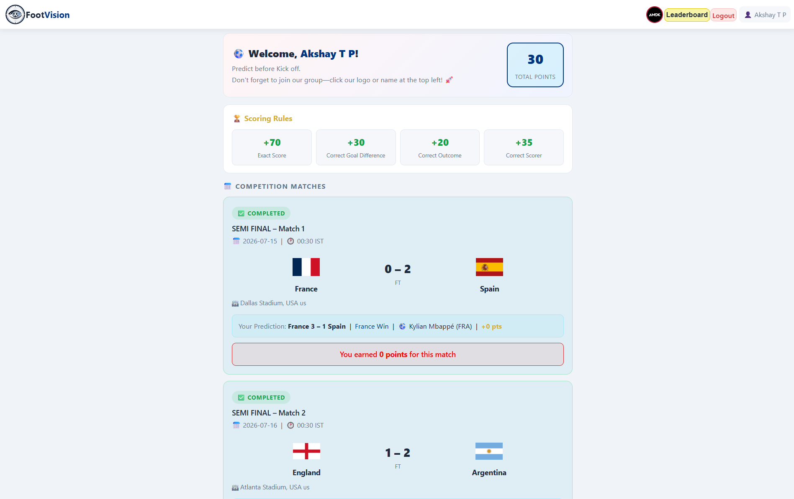
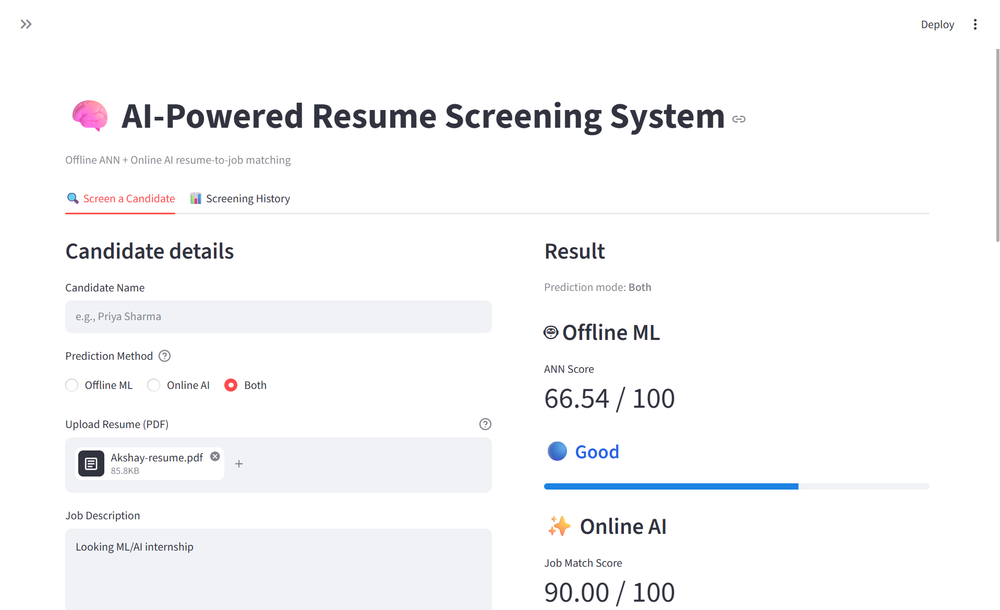

2026
MCA Graduate 🎓
Completed my MCA from the University of Calicut with a growing focus on software development, data and AI.
MACHINE LEARNING • AI • PYTHON
Hi, I'm Akshay T P, an MCA graduate focused on Machine Learning and AI. I enjoy turning data and ideas into useful, real-world applications.
I completed my MCA from the University of Calicut in 2026 and am now focused on starting my career in Machine Learning and AI.
My approach is practical: learn the concept, build something with it, understand what works and improve it. I've worked with supervised learning, neural networks, data preprocessing, model evaluation, APIs and ML-powered web applications.
I'm currently looking for opportunities where I can work with a team, gain real-world experience and keep growing as an ML/AI developer.
Completed my MCA from the University of Calicut with a growing focus on software development, data and AI.
Completed Supervised Machine Learning: Regression and Classification from DeepLearning.AI / Stanford Online.
CertificateCompleted Advanced Learning Algorithms from DeepLearning.AI / Stanford Online, going deeper into neural networks and advanced ML algorithms.
CertificateBuilt ML and AI applications including FootVision and an Intelligent Resume Screening System.
Ready to contribute to real-world projects, learn from experienced teams and grow into a strong ML/AI developer.

FOOTVISION
RESUME AIStreamlit application that combines a TensorFlow/Keras ANN with Gemini-based resume analysis to score resumes against job requirements.
Hands-on projects including diabetes prediction, house price prediction, fake news prediction, loan status prediction and SONAR rock-vs-mine classification.
A practical tool built to explore AI-assisted code understanding and automatic Java code commenting using an AI API.
A growing toolkit built through coursework, projects and hands-on experimentation.
Python
Supervised Learning · Unsupervised Learning · Neural Networks · Classification Regression · Clustering · Model Evaluation Data Preprocessing
Pandas · NumPy · Scikit-learn · TensorFlow / Keras · Flask · FastAPI · Streamlit
SQL · Git · GitHub · Jupyter Notebook
VS Code
DeepLearning.AI · Stanford Online · Coursera
Completed July 2026
View certificate ↗DeepLearning.AI · Stanford Online · Coursera
Completed August 2026
View certificate ↗Futura Labs · Kozhikode, Kerala
Completed a 2-month internship focused on the fundamentals of building full-stack web applications and hosting web applications.
70+ participants · FIFA World Cup 2026
Conducted a football prediction event by developing and managing a live prediction platform, coordinating participant engagement, collecting feedback and updating match results.
University of Calicut
Grace Valley College
LET'S CONNECT
I'm open to ML/AI internships, fresher opportunities and projects where I can learn and contribute.